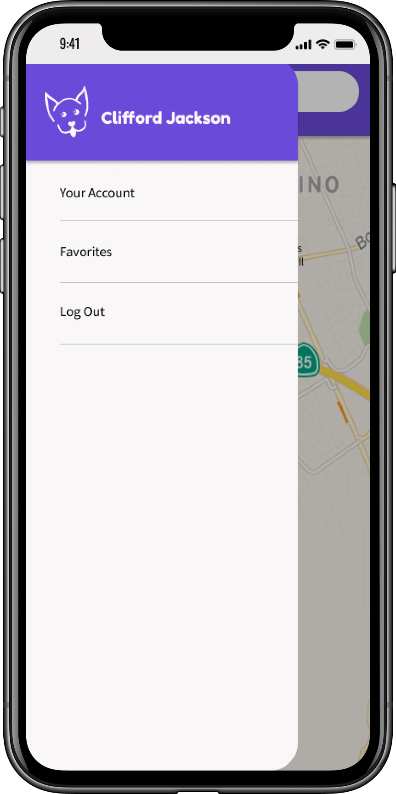
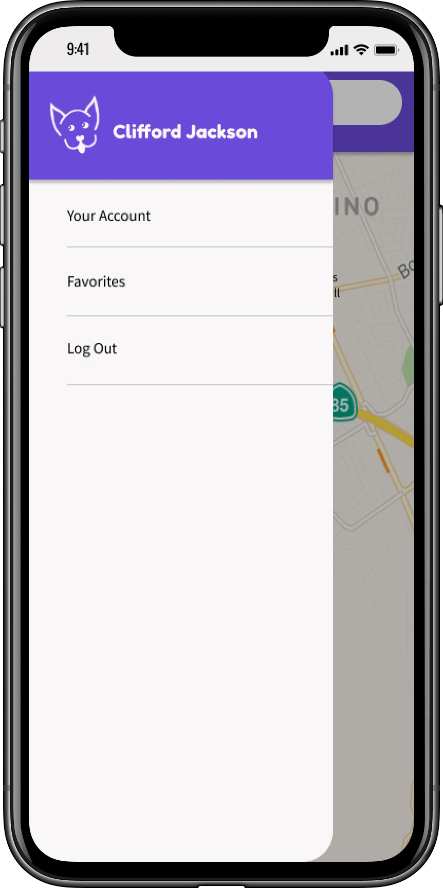
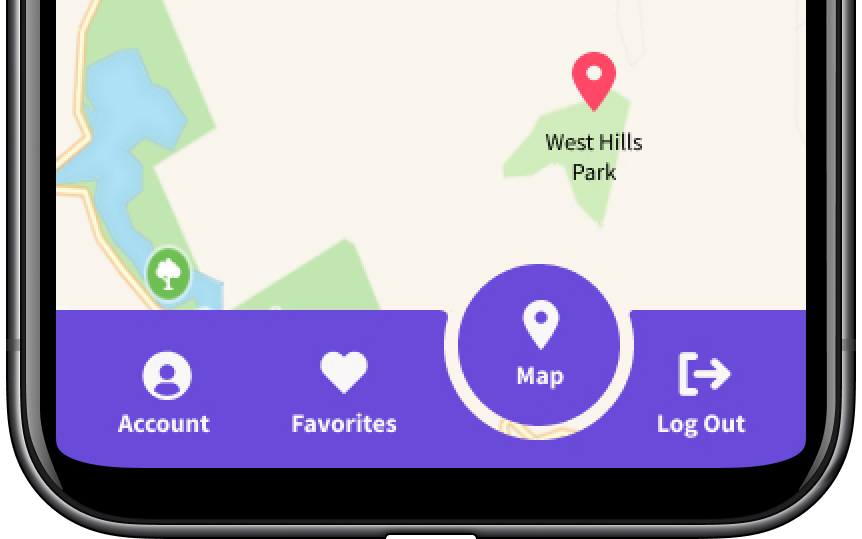
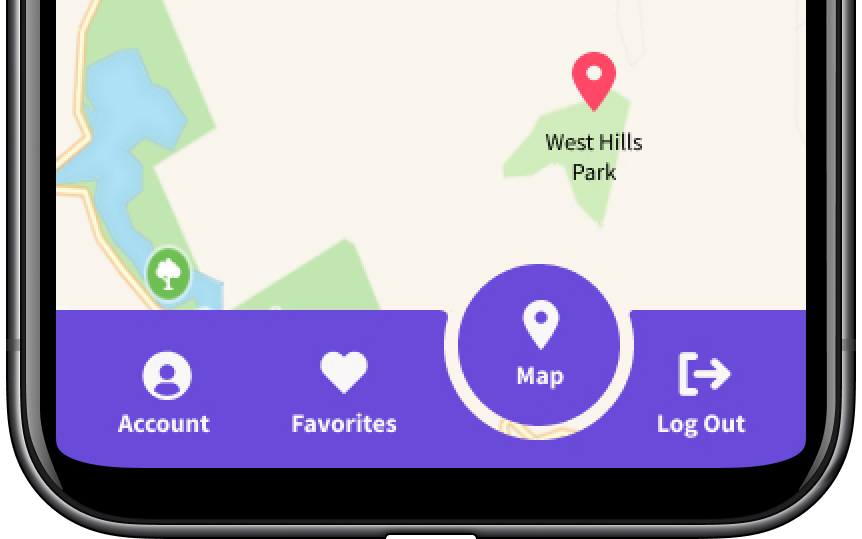

Yapper Case Study
Yapper is a mobile app that hopes to make finding locations and experiences to share with your favorite furry companion as effortless as possible so you can focus on what really matters—making memories with every member of your family!
View PrototypeMy Roles
UX Design
Visual Design
Brand & Identity
Deliverables
User Survey | Competitive Analysis | Personas | User Stories & Flows | Paper Prototype | Wireframes | User Testing | Style Guide | Visual Design
Tools Used
Adobe XD
Figma
InVision
Maze.design
Usability Hub
Challenge
Lots of businesses and public places welcome pet dogs while others only allow service animals or forbid pets altogether. For dog owners wanting to bring their best friend with them everywhere it can be difficult to know when dogs are allowed and when they should be left at home.
Solution
Yapper is a mobile app that lets dog owners bring their furry pal with them everywhere they want to go. Never be unsure about a location’s pet policy again! Yapper allows users to search for locations by name as well as by type including restaurants/bars, parks, trails & hikes, and rivers & lakes. Dog owners can see detailed information about each location as well as reviews written by other users. Take your best friend with you!
Process
User Research Highlights
The majority of my survey respondents were young (75% were between the ages of 25 and 34), middle class, working professionals. They were dog owners who live primarily in or around urban centers across the United States. This data suggested that our target audience should be young, working professionals with an active lifestyle. The survey further confirmed that the primary problem our app should focus on solving is connecting dog-owners with local, dog-friendly locations.
83%
83% of respondents like to take their dogs with them on outings around town.
90%
90% of respondents said they would want to see a map displaying dog-friendly locations.
40%
40% of respondents reported that it is difficult to find dog-friendly locations in their area.
Competitive Analysis
I conducted a competitive analysis of BarkHappy, PawParks, and Pet Connect. Through my research I determined that BarkHappy is our primary competitor. BarkHappy allows users to find local dog-friendly locations and seeks to foster a local community of dog owners. However, many users find this either off-putting (i.e. too similar to a dating app) or unnecessary. This offers an opportunity for a newcomer to enter this market: focusing on providing dog owners with detailed information about local dog-friendly places without forcing community-building.
User Personas
With the data from the user survey I constructed three user personas for this project. Tod Z. wants to quickly look up a location’s rules about dogs and to see those locations on a map. Brenda G. wants to read reviews of dog-friendly locations and to save her favorite ones so she can easily find them again. Cindy W. wants to advertise her business and increase foot traffic in her restaurant.
User Flows and Stories
Based on the above research I wrote out 17 user stories with 3 high priority stories that reflected the MVP features identified in the user survey analysis. I then mapped out 5 user flows that encompassed most of those user stories: onboarding, view location details, search using filters, reading & writing reviews, and favoriting locations. I designed these flows to be as simple as possible in order to make the user experience seamless and easy.
Information Architecture
Wireframes
I designed the wireframes for this app based on my user research as well as on successful business directory apps like Yelp. I also looked at my competitors’ designs and incorporated the more successful aspects into my wireframes.
Visual Design
Branding
In order to begin fleshing out the app’s brand I sketched out two word webs, one focused on dogs and one focused on exploration. From this brainstorm I identified the brand emotions and descriptive words to be dogs, family, love, fun, exercise, outdoors, sports, play, and joy. I then created a moodboard to evoke these words and feelings. From this moodboard I pulled out the app’s primary color palette: Purple Heart (HEX #6A4AD9) and Radical Red (HEX #FD4866).
HEX: #6A4AD9
R: 106
G: 74
B: 217
HEX: #FD4866
R: 253
G: 72
B: 102
Logo Design
I began sketching various logo ideas based on dogs: bones, collars, paw prints, and various images of dogs. Eventually I landed on an outline image of a dog’s face and I chose the name Yapper to evoke the brand feelings of fun and play. Originally I designed the logomark to sit behind the logotype however when I conducted preference testing, respondents overwhelmingly preferred to have the logomark to sit next to the logotype.
HiFi MockUps and Preference Testing
With the previous usability test results and a style guide in hand I set about putting together high fidelity mockups of Yapper. In order to refine my designs I did a few rounds of preference testing.
 

In my original designs I included a hamburger menu next to the search bar that opened a side menu. The side menu had three links: Your Account, Favorites, and Log Out. However, during usability testing using maze.design there was a 33% misclick rate involving this screen. Based on these results, I decided to take out the hamburger menu and nest those three links in a tab bar.
 

I originally designed the tab bar with only icons in order to keep the overall look as minimal as possible. However, when given a choice between that design and one with text labels, 68% preferred the latter stating that the purpose of each icon was much clearer.

I originally designed the location detail screen as an overlay over the map screen. When given a choice between that design and one where the location detail information was on its own separate screen, 69% preferred my original design. Respondents stated that they preferred this design because it felt like their previous search flow was not too interrupted.
Final Usability Testing
When I put my final designs in front of potential users for usability testing, they praised Yapper’s simple, straightforward design. Test participants easily navigated through the app and they responded positively to the brand colors and logo.

Some suggestions test participants made for improving my designs included:
- Labeling the favorite icon to make its purpose clear
- Adding names to the reviews so that they are not wholly anonymous
- Moving up the location detail overlay and,
- Including a feedback loop on each review
Conclusion
What Worked?
Yapper successfully addresses the user need of connecting dog owners with local, dog-friendly locations. Usability test results were overwhelmingly positive and users quickly navigated through the interface with little to no misclicks.
What Didn’t Work?
A challenging aspect of this project was branding, specifically the logo design. I went through several iterations with my first attempts coming out far too complicated. Through numerous revisions I eventually landed on the simple, monochromatic final logo.
Key Takeaways
Working through the full design process for this project was incredibly illuminating. Designing Yapper from scratch allowed me to wear several UX/UI hats and helped me to experience first hand the interconnectedness of each step in the process.